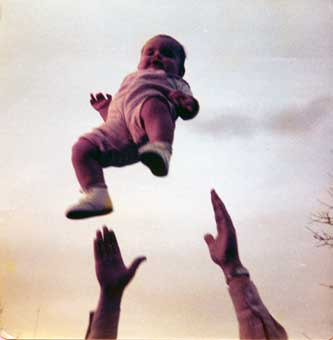
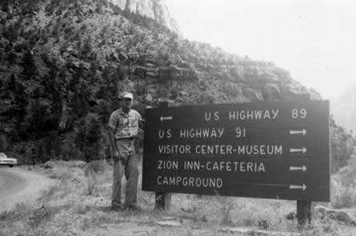
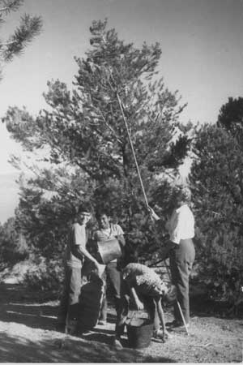
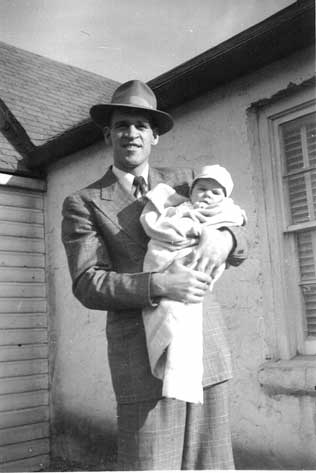

Forrest often had health issues to deal with. After he was married and had a family, he was keen to do things that promoted good health for his family, mainly with respect to diet.
As a youth, he grew tall. As a consequence, his feet also grew large. His adult height was six feet five inches though he tried to keep his weight around 200 pounds or a little less. His shoe size was 13 triple E. Because of the difficulty of finding shoes of the correct size, he often had problems with his feet. This caused deformities in his feet which plagued him most of his life. He was discharged from the Army because of foot problems. Also, because of his height, he extended his bed.
A few minor, but odd problems affected him in his youth. He told us about how he would entertain his friends by putting nickels in his nostrils, spreading them out. As an adult he always had large nostrils and he blamed it on his youthful foolishness. Also in his appearance, though not caused by anything he did, was the fact that he had only one front tooth. The spacing appeared normal, but if you looked closely, you would see that he only had one central incisor in the top row.
Forrest lost his hair around the time he was in the army. He always had some hair around the sides, but was bald on the top. He blamed his hair loss on his army experience, either from the hats he had to wear or the medicines they forced on him. Even though hair was sparse on the top of his head, he had no trouble growing hair on his face. He could easily shave twice a day, and did on days where he had a special occasion in the evening. He even had a nose hair trimmer and used it. One time he could have used the protection of hair on the top of his head. We were visiting Timpanogos Cave. He wore a baseball-type cap on his head as we went through the cave tour. At one point the top of the cave was low and he struck his head on the rough ceiling. The result was a gash on his head, even without tearing the material of the hat he wore.
Another minor issue was his profuse perspiration (also inherited by me to some extent). Whatever work he did, regardless of the heat or cold, resulted in streams of water running off his face, down his long nose and off his bald head. He had to make sure he drank a lot and had enough salt in his system to keep steady.
Though this is not a health issue, one time they had someone do "color therapy" and suggested that he wear pink shirts. We were pleasantly surprised to see how well he looked in pink shirts.
Forrest suffered from a number of more serious health problems. He had two hernia ruptures that had to be taken care of surgically. He also had quite a few problems with his stomach, as mentioned in his work with Maxfield Candy Company and earlier in his mission experiences. He found ways to deal with his problems, either by research or experimentation. He learned that he could control his problem with colitis by not mixing starches and meats in the same meal, so often our meals were either mainly potatoes and starches or proteins and beans and (less often) meats. He also believed that extra amounts of sweets in his diet as he grew up made him more susceptible to these problems. In our home, we had candy and sweets only on special occasions (including when he made his special candy, which was not very often). On Halloween, we only once participated in the Trick-or-treat tradition that I remember. That year Lynn and I were taken around to the homes by friends' families (this was in Park City). I was amazed at the vast amount of candy. I think now that it was half of a grocery sack for the two of us. At home, they gave out pieces of dried pears as treats to visiting children. I am not sure any of the children actually ate them, though. I liked dried pears and apples and considered then better than candy.
There were some certain health and diet systems in place in our home. We usually always prepared all our food from scratch, staying away from white or refined foods, especially white sugar or flour. Prepared cereals were rare in our home, breakfast usually consisting of cooked oatmeal, cracked wheat, even ground millet and some unusual items like that. We boys would look forward to the time that we could go to our grandparents place in Oak City because they had a jar of Kelloggs Corn Flakes from which we could have a special breakfast (even later in the day). We always used honey and raw sugar for sweetening. One rare time that we had "Koolaid" it was made with raw sugar, which gave it an interesting flavor. Drinks were always water, juices and milk, often raw, whole milk. Soda was rare around the house, though we sometimes made home made root beer. Desserts were usually homemade also. Among my favorites were cake with caramel frosting and applecobbler with pudding sauce. Forrest experimented with making yoghurt. Now I enjoy eating yoghurt, but not then as it was usually plain unsweetened or simply with some fruit or jam. It wasn't until I tasted european yoghurt in Germany that I really came to enjoy it. Another food I hated then, but learned to enjoy later was asparagus. I assume I disliked it as a child because we would not waste any food, even the stringy, tough stalk. Everything was conserved. Food was precious and never wasted. We always had large cans of honey, large blocks of cheese that aged in the cellar, many jars of preserved fruit, juices and tomatoes, and lots of dried beans and grains. Instead of chocolate, we used carob. Nuts were usually raw and unsalted. Sunflower seeds and pumpkin seeds were eaten as snacks a lot.
Forrest always took good care of his teeth. He almost always had a tooth brush with him and would dry-brush his teeth as he drove sometimes. He always preferred the hardest brushes possible, with natural bristles. His teeth were in good condition, mainly because of his care for them and his nutrition.
We walked a lot and were expected to work hard. That and our diet helped us be healthy. We would also have specific fasts (liquids, but no solids) to help promote cleansing and health. Bathing was encouraged without soap as healthier than with soap. This is a practice that I follow to this day. I believe that my skin is much healthier as a result. We would wash hair with tincture green soap (a pure, natural liquid soap) and a rinse of diluted vinegar water. These all were to promote healthier skin and hair. He took us a few times to a place we called "Stinky Springs", a hot mineral water bath pool between Corrine and Thiokol in Box Elder County. We would soak in the hot sulphury water.
In trying to promote better health for the family, Forrest experimented with different kinds of health techniques, foods and supplements. He learned some unusual techniques, including reflexology where he could diagnose and alleviate some ailments by feeling and applying pressure to places on the bottoms of the feet and palms of the hands. Another diagnostic method, called iridology, could show health problems in the appearance of marks in the iris of the eye. One procedure that I really learned to appreciate was Swedish massage. He could really help relieve tension in the back. He taught me a few of his techniques. It takes a fair amount of strength to do it.
He grew sprouts of about every variety imaginable, including mung beans, garbanzo beans, soybeans and wheat grass. He also made drinks from carrot juice, beet juice, sprout juice and combinations of juices. He grew comfrey plants and made a drink out the leaves, usually mixed with pineapple juice. We always had some kind of herb teas around, mostly for some health ailment or another. The most common included mint teas, catnip, sage, hops, raspberry leaf, brigham tea, chamomile and rose hips. One health drink that we would use to help fight colds was vinegar and honey, sometimes used to wash down other pills and medicines. One medicine that was particularly distasteful was a combination of cayenne pepper, golden seal and some green herb wetted in a small amount of warm water and washed down with a tall glass of warm vinegar and honey. He often had a handful of pills for us to take, including alfalfa, kelp, liver, garlic, goldenseal, calcium and vitamin C. Goldenseal was useful for curing cankers and stomach problems. Dried cedar gum was used to help promote healthy kidney function.
Our family was associated with a family in Centerville. Their health food organization was called the Good Neighbor Co-op. The family's name was Squires. We were at their place a lot, both for health food reasons, quasi-political discussions and also for their cherries. They had wonderful cherries. In those days there were no worms in cherries. We would pick cherries and pay for them, a little extra because of all of the cherries we ate while picking.
Meals usually always began with some raw or fresh vegetables, to aid in digestion. Forrest did not believe in drinking along with meals much. Also, drinks that were extra hot or cold were avoided. Ice was seldom used in drinks. He explained that when we were thirsty and hot in the summer, really cold water was not a good idea because it would make the body think it was cold and try to heat up to compensate for it. The herb teas that we would drink would not be overly hot either.
Even though there were a lot of foods and nutritional aids that were distasteful, I did enjoy many of the foods they made. We usually had homemade bread and foods made with natural and unrefined components. We always had fruits dried and bottled, using only honey to sweeten. Dried fruits were never chemically treated. For lunches in school, we usually took simple sandwiches along with a bag of raw sunflower seeds and raisins, sometimes with peanuts, usually also raw. One thing I enjoyed more than others was candied pumpkin seeds, sweetened with a healthy sweet coating. We would also enjoy molasses taffy and horehound cough drops.
Because we always raised chickens, we often ate eggs or foods made with eggs. One interesting custom was having cream puffs and home made pudding (using many eggs) for breakfast or other meals. This meal would help us use up our extra eggs. We did not eat meat much, but had chicken more often than other meats. I really enjoyed the home made fried chicken.
Forrest had some nervous problems in his life. Arvilla said that she noticed some nervous "tics" in his mannerisms and determined that she would help him in his life to relieve stress and help him. Later in life, he had a noticeable slight palsy or trembling. Another condition that was well known was his ability to fall asleep readily. At church or when he would sit down at home, he would quickly fall asleep where he sat. It did not lake long for him to fall into a deep sleep.
The most serious health problem in Forrest's life was his electrocution in Park City in 1959. The accident was described earlier in this writing. Here is his description of his recovery. If you are squeamish, you may want to just skim over it. "For six months I was treated for this, and at no time could I get any water on it. When taking a bath, I had to hang that foot out of the tub. After a few weeks, the doctor dug out all that burned dead flesh out of the wound. Then it began to heal. The new tissue would grow up in what they called granulation in little bumps all over the wound and it would come up above the surface of the skin. The doctor would take silver nitrate and burn the new tissue till it was below the surface of the skin. It would heal over a little and then the tissue would grow up again and they would have to repeat the process. He had to do that several times. Finally it closed over and all this time the nerves were growing back in the area. When ever I would have to stand of sit for any length of time it would just ache and throb till I could barely stand it, so I would have to get up and walk around. I also had trouble running the tractors on the farm. I had the same problem (aching, throbbing pain), so I built a rack on the side so I could prop my leg up so I could keep it elevated. It took a good six months before it was completely healed over, but after that the slightest bump would cause terrible pain. Every time I would get near electric power lines I would get that awful sensation."
He carried the scar from this accident for the rest of his life. The burn area was always a dark purple color. He did not complain of pain or much problem with it, but in the end, when he was diagnosed as having leukemia, we supposed that the electrocution could have contributed to the cancer.
Towards the end of 1979 he had some problems that started with weakness, possibly anemia. As things got progressively worse, he was admitted the hospital for tests. While there, his conditions worsened and he experienced a lot of pain. The doctors were at a loss to diagnose his problem. He had a lot of internal bleeding and pain around his chest and lungs. They made a number of painful tests. Finally after quite a while, they discovered that he had a rare form of leukemia, referred to as Acute Myelocytic Leukemia. He was treated for this and returned home for a few days in February 1980. Shortly after that he experienced a massive brain hemorrhage. Arvilla was with him and had to take him to the hospital, he being in extreme headache pain. By the time they reached the emergency entrance, he was unconscious. He died shortly after that. There are specific details of this experience in several writings at the appendices of this history, one was written by Forrest as he was in the hospital.
Music, Humor and Recreation
Forrest was an avid musician at heart. He had a beautiful voice and used it often, singing in church, at cultural events and at home. He and Arvilla performed in many wards and church functions such as dinners. Among his well known songs were "Open the Gates of the Temple", "The Holy City", "The Lord's Prayer", "You'll Never Walk Alone" and "Old Man River." He had a booming low bass voice as part of his wide vocal range. We were always in ward choirs, wherever we lived. Before he was married he was a member of the Orpheus club in Salt Lake City. During his mission, he sang for investigators and in conferences. He supported music at home. We always had a piano, first an old black heavy upright, then a lighter-weight console model, an ESTEY. He bought the piano for us to use and paid for piano lessons for my brother and I, even with his small salary.
An often used phrase in our home today is "Buchanan humor". We believe that it was inherited from Forrest who had a dry wit. He loved to tell corny jokes, usually over and over, but they were still funny because of the way he told them with a straight face. He loved to see people laugh. Here are some examples:
On hearing a complaint of dirt on or around food, he would say, " You know, you eat over a ton of dirt every day."
He would stretch one large foot heel on the toe of the other foot and exclaim, " Here is an example of when two feet make a yard."
"Why to birds fly south for the winter? Because it is too far to walk."
When a food was particularly good, he would say that it was "musty". Then with a smile, "Musty have more."
He wasn't as much the inventor of particular jokes but he remembered the ones that he enjoyed and used them in opportune moments to make people happy.
 We played games together as a family. With there being only two children, it differed somewhat from what we have now for family activities. One time that we remember with fondness was when we were playing bingo while eating popcorn. For the markers for the bingo squares we used raw, hard dry red beans. We were having a great time with much laughter and at one point with popcorn in one hand and beans in the other, he accidently filled his mouth with the wrong contents. We also played Flinch, Chinese checkers, chess, Touring, Treasure Hunt, Finance (similar to Monopoly) and Cootie. We would stay at our grandparents' home in Oak City for New Years Eve and play Yahtzee until midnight.
Forrest loved children. We had a lot of fun together. He loved to toss me up in the air. Unfortunately, I did not let him do it much because of my fear of heights. He did get to play with a couple of grandchildren, though, before we moved to Illinois. (The picture is of Forrest tossing granddaughter Mary, about 1975) You could always see the delight in his eyes when children were around.
We went out to movies occasionally. This happened usually on Hallowe'en nights as an alternative to trick-or-treating. On these nights we usually went to drive-in movies. We always had a television, though Forrest did not watch it much, preferring to use his time in gardening and yard work. He was often out until dark working. Sundays were a day of rest, though, and we spent them together.

Family vacation to Zions Park, 1963
 We liked to go camping, especially in the local mountains and up Oak Creek canyon. Sometimes we would go rock hunting or pine nut hunting with the Wilcox family, Forrest's sister's family. (The picture of pine nut hunting is from 1964 and includes Arvilla, Joseph, Lynn and Gordon Fulwilder). We enjoyed travelling places together, usually to visit relatives, especially grandparents. A number of times while travelling, we would play math games to help us children learn to add and multiply in our heads. Sometimes we would count cars or count the different kinds of gas stations along the road (there were no freeways then, we travelled through all the towns). One year we took a vacation down to Northern Arizona to visit Mesa Verde and Arvilla's double cousin, Verl J... in Tuba City, Arizona. We were fascinated with the Indian homes and communities, especially the Hopi village on top of the mesa at Oraibi.
Holidays were wonderful. We usually had a live Christmas tree, sometimes a juniper/cedar tree from the local deserts. Christmas presents were modest. Often we children had been saving up dimes in a dime "kitty" and were taken to the stores in Sugarhouse or Cottonwood Mall to buy trinkets at the Walgreens or other stores there. Music, again, was part of our lives with the singing of traditional carols around the piano during the season.
Depth of Character, Love of the Lord and of His Family
Forrest was a man of quiet kindness. As far as I could tell he never harbored ill feelings towards anyone. He did have disagreements and was at odds with a few people at times, but it never was manifested in anyway that would hurt anyone. He lost his job at Eimac in a way that really distressed him. He was impeccably honest in everything. I remember that the company was looking to make cutbacks in workforce at the time, but the reason they gave for his dismissal had to do with an accusation of him taking company property out of the building. He assured us that it was just a piece of tape that was stuck to his clothing.
He always taught us to obey the laws of the land. One day I was riding with him downtown in Salt Lake City. I believe that I was about eight years old at the time. I pointed out to him that he had better be careful as it was Friday the 13th. After making a U-turn in the street (mid-block), a police car pulled us over to give him a ticket for the illegal U-turn. He was embarrassed by this and used it as an opportunity to teach me about honoring the law.
Wherever we lived, in all our homes, we always had family prayer. There was no exception to this. Since there were usually only 4 of us, we each had our turns quite often. Sometimes he was busy late at night with work in the garden or yard, we always had prayer before bed. It was natural for us to pray at meals as well.
We read scriptures, but not usually as a family. We were encouraged to read individually, though. Most of the time we were home, other than Sundays, he was out working in the yard or in an out building, so we did not do much together in the evenings with him. Forrest usually kept a copy of the Book of Mormon with him as he went to work. Later I remember it being one of those light blue paper-back Book of Mormon issues. I remember seeing his well worn missionary triple combination scriptures around the house a lot. We always had the Improvement Era and other church magazines around the house, especially in the "reading room" keeping company with the Readers Digest and Guideposts magazines on the clothes hamper by the toilet.
Forrest's cousin Golden Buchanan was acquainted with then apostle Spencer W. Kimball and was involved with the creation of the Indian Student Placement Program, where children from the Indian reservations were given an opportunity to live in our homes and enjoy the benefits of education in our schools. We were not reimbursed for our expenses. We participated in this program four years (not consecutively). Our children were Luella Mahoney from Peach Springs, Arizona, Gordon Fulwilder from Scottsdale, Arizona and Glen Juste from Sacaton, Arizona. This was typical of the generosity and service Forrest was willing to give to others and the Lord.
We did not always have family home evening, but we did a lot together as a family over the years and quite often had our home evening. For a while we kept a journal of our family home evenings. These entries show quite a bit about our family life and his leadership during that time.
Here are a couple of examples:
|
Lesson 3, Jan. 31, 1965 (in Forrest's handwriting) We began by asking each one of the things we were thankful for. Mother said we were thankful for going to church and being able to get home safely and be united together. Daddy said he was thankful for our lights & food, good health and strength. Joseph and Lynn & Gordon each said what they were thankful for. Joseph gave the opening prayer. Lynn gave us a passage in D & C 76:24 - We are our Heavenly Father's children. From the Prophet Brigham Young, is that we lived in our Heavenly father's house, and knew him well. Moses - immortality and eternal life of man. Happiness would be living with our Heavenly Father. Requirements to receive the heirs of the kingdom. If we wish to know God we must [be] like him. We should face up to our mistakes and always tell the truth. You can never be near our Heavenly Father until we admit our mistakes to doing wrong. We shouldn't judge other people for our mistakes. 1st step - recognizing the fault 2nd step - to take the blame. Joseph - Mosiah 2:41 Lynn - Moses 1:39 Gordon - Romans 8:16-17 Verses to memorize every one participated Closing prayer - Lynn Buchanan
| |
|
Lesson 13 , probably in Spring 1966 (in Forrest's handwriting) Op Song - Guide me to Thee Op Prayer - Lynn The resurrected Savior shows his Love. We sang - I know that My redeemer Lives Recited in unison many scriptures. We sang - Lord Accept Our True Devotion We sang - Come Ye Children of the Lord Assignment for next 24 hours. How we would act if Jesus were in our home. Beginning immediately try to act as if the Savior were in our home. Closing prayer Joseph
|
It is clear that Forrest saw to it that we had these times together as a family, to learn the gospel together, to enjoy each other and to plan together.
I was often privileged to accompany Forrest as we went "Ward Teaching". He was faithful in visiting his families and took the opportunity to teach me gospel principles. I remember the care he showed to the different families we visited. He was a Seventy most of the time I was with him so most of his visiting was to members in inactive or part-member homes.
We always attended our church meetings. Forrest was often called upon to give prayers in meetings. He was not comfortable speaking or taking charge. In his last years, he served in the High Priests Group leadership and was more publicly involved. He did teach some classes and worked with people on genealogy. In a few wards, he also worked on a project where they tracked the temple work people did, representing each as leaves and branches on a symbolic tree. He painstakingly recorded the loving work the people of the ward did in the temples. He acquired a love of family history and genealogical research and spent many hours doing the work. He inherited some work done by his grandmother, Annie Isadore Roundy Davis. He took me to the Genealogical Library a number of times and taught me a lot. One of my favorite times was after I returned home from my mission in Germany and we did German research together, finding a lot of information about our ancestors in the area of Siegen, Germany. After his marriage, he helped Arvilla a lot with her research, even going to the effort of learning the Danish language enough to do Danish research (also for his Danish ancestry). Later in their lives, even in the week he was home from chemotherapy in February 1980, they did Danish family records name extraction work together for the church.
Forrest loved the temples. When I went to the temple for the first time for my Endowments, he was with me, not only that time, but the following Saturday he spent the day with me as we went through 3 sessions in the day.
Forrest was grounded in the love of the gospel from an early age. When he received his patriarchal blessing in 1947, a number of those principles were focused and strengthened:
|
"Thou wast born of goodly parents and have been taught the principles of truth from thy childhood for which blessing you are truly grateful. Thou art one of those choice spirits who was faithful and obedient in the spirit world and kept your first estate, by being faithful and obedient in this life you will keep your second estate, and you have the promise that you shall have glory added upon your head for ever and ever." "I bless thee that you may be prospered in your labors, that you may not want for the necessities of life, and that because of your kindness and consideration for others you shall learn from your own experiences that the way to be happy is to make others happy, and you shall have the gift and ability to make friends, and I promise thee that you shall never lack for friends in time of need." "If it is thy desire, and thy faith fail thee not, the day will come when you shall be given a companion in life of one of the choice daughters of Zion, and I bless thee that love, peace and harmony may abide in your home. In so far as it is in the providence of the Lord I pray that you may enjoy the blessing of fatherhood and that through the blessings of the holy temple your loved ones will be yours for time and all eternity. These are great and wonderful blessings that are found no where else in the world except in the Temple of our God." |
Life usually brings surprises, disappointments, frustrations and even unexpected pleasures. Forrest's life was very much that way. He faced life with a trust in his Heavenly Father that carried him through the many turns in his life. One time he wrote about his feelings concerning life. This writing showed a seldom expressed feeling of frustration, both in his inability to serve and help others as he wished as well as a sadness over the trends towards wickedness in the world, especially among the Latter-day Saints. Here are some excerpts from that writing (dated January 22, 1971):
|
[I am] grateful for the inspiring thoughts that came in my mind this morning. How many of us criticize our Bishop or his counselors? How many of us have hatred for our neighbors? Do we realize how sacred the voting is in the church? We are given our free agency to raise our right hand to the square. That is an authentic vote in the affirmative for the person involved. How many of us criticize the decisions made on this individual, after we have voted for this person. We should attend every meeting that we are assigned to, because in some meeting wisdom will be given out that is so important for us.
When a man is called to the office of Bishop, he is given the power of discernment, in other words he is given the inspiration to make the right choice, providing he is in tune with the right spirit. Satan is really in his glory in our ward. He is in his glory when he sees people with such hatred and animosity that we have in our midst.
Just remember we have got to overcome the world. This world will pass away, the wicked will burn as stubble. We can be in this world, but we don't have to be of this world. How many of you are of this world?
I've had such a strong desire to help some one in their genealogical research, but I guess no one needs any help. I am really helping myself, though. With my persistence at the library, inspiring thoughts have come to me, both at home, at work, and at the library, to guide me in my search for the right choice pertaining to my direct line. This is one of the privileges that is given to us, if we are faithful, and persistent in our quest for help in guiding us to the right choice on our direct line for our ancestors. We are going through trying times. We are all being tested, or going to be tested. If we can withstand the buffetings of Satan, this will be a great stride in our favor. |
| This morning at 5:25 I left for work at the Deseret Press to get the TV Guide out for Idaho. We got it completed at 2:00 P.M. and while returning home I listened to the Primary Children's chorus singing for the commencement of the afternoon session of general conference. It was such a joy to hear them sing. We enjoyed so much the conference session and the emphasis on keeping the commandments and committing ourselves to service to our fellow men. There were changes made where beginning in 1979 that there would only be two stake conferences each year. Lynn and I and Merrill Cruser went over to listen to General Priesthood Mtg. It was a very inspiring meeting. They had combined prospective elders of the Salt Lake Valley that could and would sing to render the music for the priesthood meeting. It was a real thrill to hear them. |

Forrest holding Joseph in his arms
Appendix A - Life Timeline
Appendix B - Histories and journals
Appendix C - Mission Journal
Appendix D - Recipes